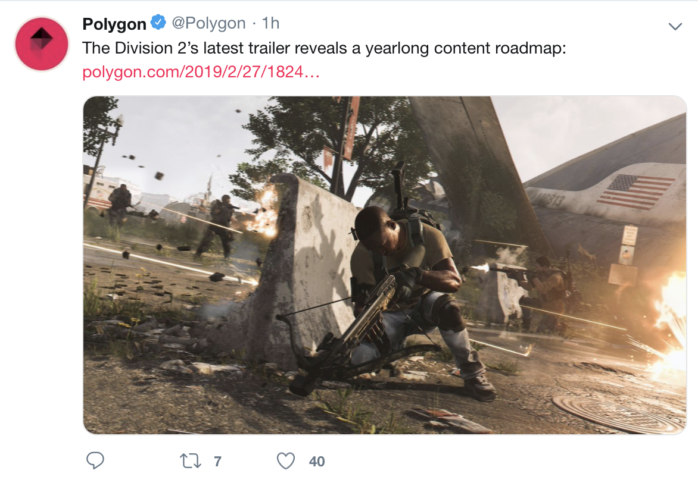
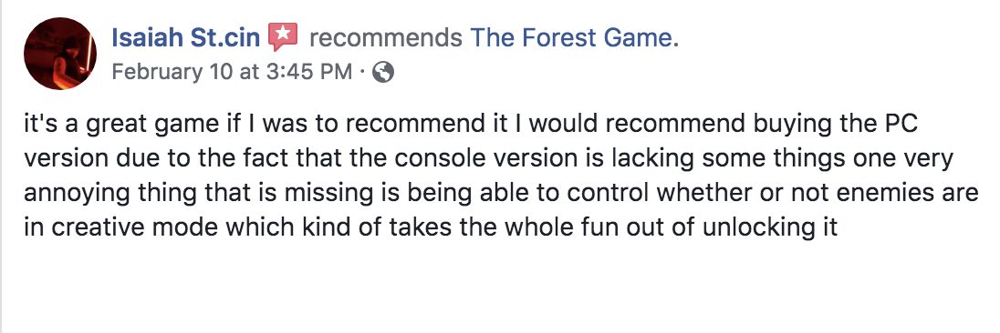
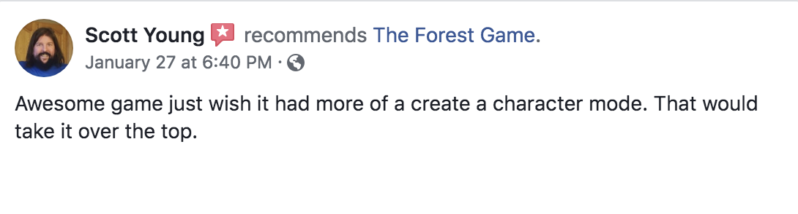
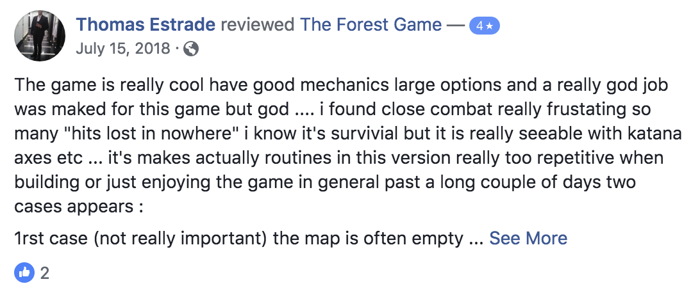

Reviews and Media Coverage
"The story you discover down in those depths is worth the trek." -Gamer Review 2.0
"okay this game was a big surprise, really good story plot and graphics as well as the multiplayer mode. i would recommend the game for anyone.. " -havo
"Pacific Crest Survival frequently flirts with perfection. A fantastic and engrossing survival-horror experience from start to finish." -PC PowerPlay
"A great open world survival with AMAZING visuals! I play multiplayeralot and the game still manages to offer a lot of suspence." -DawnofAaron
"Pacific Crest Survival is one of the best survival games to date, especially because of its interesting story, inspired by horror movies like the Descent. Everything is here to remind you that the surrounding nature will do everything to destroy your morale and your life. -Gameblog.fr"
"This is by far the most intense game that I have played in my entire life. -NT"
Title tweet




